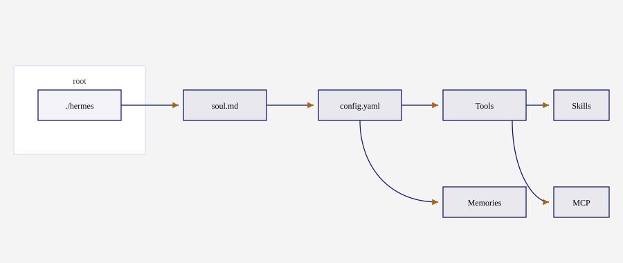

This is a diagram I created based on my trial/error fine-tuning the Nous Research Hermes Agent, and sitting through several of Stanford's publically available CS329Z lectures.
coarsely_explained;
soul.md: The mild to moderately unsettling realization that you must first embed (imprint) a persona, philosophy, or “soul” into each agent. From a technical perspective, this is the first chunk of data uploaded into the context window of every prompt a user executes.config.yaml: File where the breadth of the Hermes Agent’s functionality and reasoning is configured.Tools: Are various python programs and low-level code functionality to carry out various tasks by the agent.Memories: Not your device’s RAM. This is the agent’s Episodic Memory (system logs), Semantic Memory (knowledge and history), and Procedural Memory (steps to complete tasks/skills).Skills: Stored files that instruct (prompt) the agent on how to complete any given task.MCP: The Model Context Protocol servers the LLM can be configured to in order to process external
platform information.